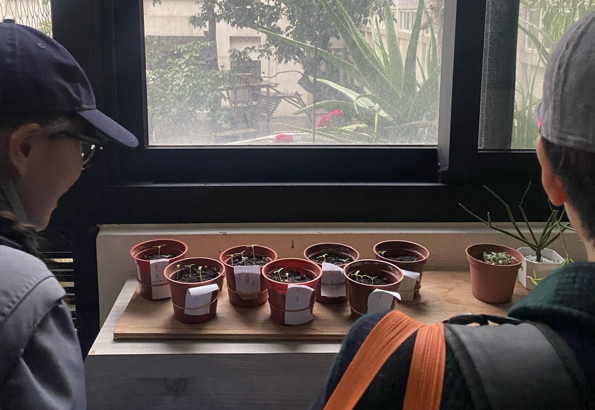

Tzu-Yun Wei (they/them) is a Taiwanese artist/designer living in Taipei. They view design as a strategic tactic to foster relatedness.
Their process-based practice explores identity, multiplicity in lived experience through drawing/writing, design and curations.
They have collaborated with mission-driven nonprofits like Right To Play, Ugly Duckling Presse, Processing Foundation, Taipei Art Book Fair and ONEeducation to develop teaching materials for related communities.
As an educator, Tzu-Yun has led courses and workshops in design writing and poetic technology for Pratt Institute and National Taiwan University of Science and Technology.
Tzu-Yun holds an M.F.A. in Communications Design from Pratt Institute. Currently works as a co-founder of Co-Assembly—a Taiwanese co-op investigating the collective power of humanizing data through research, experimentation and organizing.
/ Projects /
[2024-ongoing] Printing in Progress → What Makes A Book A Book


[2024] Things we've done here make it "here"


[2024] Nation of Scatterbrain

[2022-2024] asterisk as a lifeform
/ Education /  [2025] Design Pathways → self-research → manifesto (NTUST)

[2024] Printing With Purpose: Letterpress, Bookmaking, and Collective Design (Pratt)
/ Visual Design Service /
[2024] TPABF: Groovy Quote, Key Visual Design